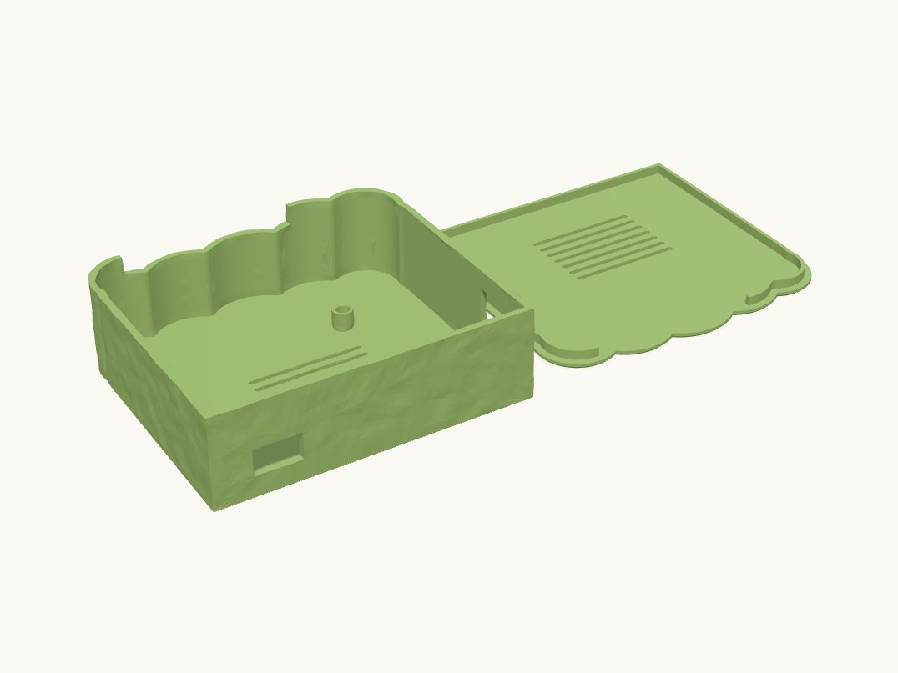

Work / Electronics

Technical details
The plan view is a cloud (lib.form.cloud_outline): flat edge on the -Y power side, straight sides at +X (Ethernet) and -X (SD end), round lobes along the +Y GPIO edge. Walls are vertical; the body's outer skin carries a soft noise texture (lib.form.textured) and the lid's top edge is chamfered so the silhouette reads soft from every side.
Body: four M2.5 heat-set standoffs at the Pi 5 hole pattern (Pi screwed down from above), vent slots in the floor under the board, four rubber-foot recesses, and three windows cut with lib.patterns.pi.pi5_port_cutouts: USB-C (power, -Y flat wall), Ethernet (+X wall) and the 40-way GPIO ribbon (+Y lobed wall). The ribbon opening is a NOTCH from the ribbon slot height up through the rim, closed by the lid: the IDC socket sits inside the lobes and the assembled cable drops into the notch before the lid goes on (a closed window that high would leave < 1 mm of wall above it). micro-HDMI, USB-A and the microSD slot are CLOSED (add "hdmi0"/"hdmi1" to POWER_PORTS, "usb_a_lower"/"usb_a_upper" to USB_PORTS, or an "sd" cut, in params.py). Lid: cloud plate with a 3 mm lip dropping inside the walls (0.25 mm slip fit per side), lip interrupted over the ribbon notch, vent slots over the SoC, 1.5 mm top chamfer; no screws.
Hardware: Raspberry Pi 5 (bare or with a heatsink <= 20 mm; the Active Cooler at 13.7 fits), 4x M2.5 brass heat-set inserts, 4x M2.5 x 6 screws, 4x 10 mm stick-on rubber feet (optional), a 40-way IDC ribbon cable on the GPIO header exiting through the +Y window.
Pipeline: the body is built exactly in B-rep (outline, walls, bosses, windows, vents, feet) and handed to lib.form.textured LAST; the exterior-only, horizontal displacement leaves the bed face, the rim height, the cavity, bosses, holes and windows untouched, so the lid fit and the Pi fit are the B-rep ones. The body exports STL / 3MF (no STEP); the lid is B-rep.
Print orientation: body floor on the bed, lid top face on the bed (returned already flipped). Windows are bridged by the wall above them (<= 18 mm spans). Material: PLA or PETG.
Assumptions (user unavailable): headless use, so only power, Ethernet and GPIO are open; a +Y clearance of 14 mm so the IDC socket and its strain relief sit inside the lobes; standoffs use a 1.2 mm insert wall (OD 6.4) to respect the component keep-out around the Pi holes.
Parts
| Part | Size (mm) | Volume | Thinnest wall | Printability |
|---|---|---|---|---|
| body | 98.621 × 89.666 × 29.6 | 34.4 cm³ | 0.19 mm | passes |
| lid | 98 × 89.2 × 5 | 16.9 cm³ | 1.01 mm | passes |
Engineering views
Downloads
- body.stlSTL · 5.4 MB
- cloud_pi_holder.3mfwhole plate · 1.8 MB
- lid.stepSTEP · 246 KB
- lid.stlSTL · 322 KB
Library parts used
Parametric components shared with the other designs; see the parts library.
| Component | What it does | Printed in |
|---|---|---|
Heat-set insert bossfasteners.heat_set_boss | Cylindrical boss with a correctly sized pocket for a brass heat-set insert. | PETG, PLA |
Cloud outlineform.cloud_outline | Cloud silhouette sketch: flat edge at -Y, round lobes bulging toward +Y; centred on the origin. | not yet |
Texturedform.textured | Displace a shape's outer surface with Perlin noise or horizontal ripples and return a mesh (organic skin, hammered / wavy look). | not yet |
Corner holespatterns.corner_holes | Four holes inset from the corners of a length x width rectangle (lid screws / corner bosses), centred on the origin. | PETG, PLA |
Raspberry Pi 5 mountpatterns.pi5_mount | Raspberry Pi 5 four-hole mount pattern (58 x 49 mm, M2.5) centred on the origin. | PETG, PLA |
Pi 5 port windowspatterns.pi5_port_cutouts | Raspberry Pi 5 connector windows for one board edge as a wall-plane sketch (x along the edge, y = height above PCB top). | not yet |
Raspberry Pi outlinepatterns.pi_board_outline | Raspberry Pi PCB outline (rounded rectangle) positioned to line up with the matching mount pattern. | PETG, PLA |
Rubber-foot recessprimitives.rubber_foot_recess | Negative (subtract me) shallow recess to locate a stick-on rubber foot; top face at z=0, extends down. | PLA |
Vent slotsprimitives.vent_slots | Grid of rounded ventilation slots filling a rectangular area, centred on the origin (subtract from a wall). | PETG, PLA |
Source: models/cloud_pi_holder · built 2026-09-09 13:43
Cloud Raspberry Pi case
A Raspberry Pi 5 case shaped like a cloud, with a soft textured skin and every port where the board expects it.
The outline is a cloud, but the inside is all fit: heat-set standoffs on the Pi 5 hole pattern, windows for power, HDMI, Ethernet, USB and the SD card, and a lid that drops in and screws down.
- Size
- 99 × 90 × 30 mm
- Print plate
- 207 × 90 × 30 mm
- Parts
- 2
- Filament (PLA)
- about 64 g
- Print time
- about 4.4 h
- Status
- Ready to print
Want it in another size, colour or material? Say so in the request: fitting it to your object is a $5 adjustment, and you see the revised design before it's printed.
Measure it, describe it, and we'll draw it.
Requests take a few minutes. You'll get the design and a price back before anything is printed.